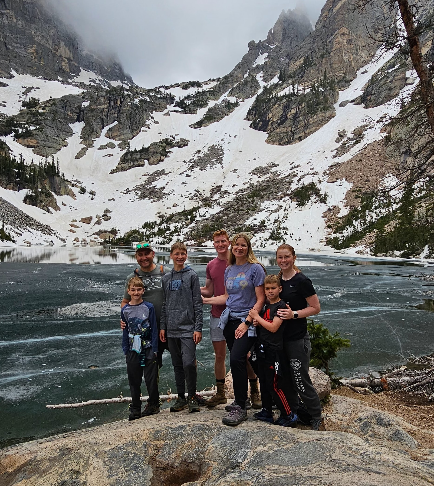

Suzanne Jane Hildoer | WDD 130
Suzanne Jane Hildoer, a devoted stay-at-home mom residing in the picturesque landscapes of Colorado, finds joy in the chaos of raising five wonderful children. With her eldest navigating the college experience and the youngest embarking on the exciting journey of first grade, Suzanne's days are filled with the laughter and challenges that come with motherhood. Balancing her family life, Suzanne is also pursuing her educational goals as an online student at BYU Pathways, showcasing her commitment to personal growth and learning. Beyond the realm of academia and parenting, Suzanne indulges in various interests that add color to her life. Pickleball, high fitness, and biking serve as outlets for her active lifestyle, providing both physical and social enjoyment. Hiking adventures allow her to connect with nature and appreciate the beauty of the outdoors. A true enthusiast of the arts, Suzanne delights in attending Broadway shows, immersing herself in the magic of live performances. In addition to her vibrant hobbies, Suzanne has a keen interest in family history, weaving the threads of the past into a rich tapestry of her heritage. Her days are a harmonious blend of nurturing a loving home, pursuing education, staying active through biking and other activities, and immersing herself in the cultural delights that make life truly fulfilling.